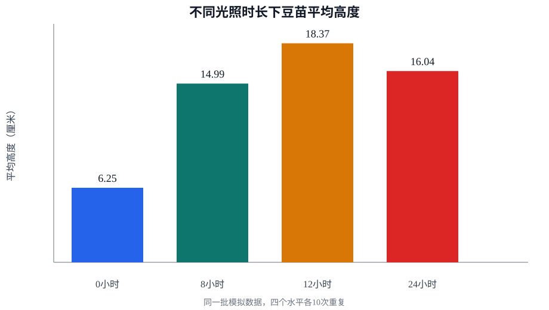

Prompt: tutor-language-prompt-v2.3; Model: deepseek / deepseek-v4-pro

学生：我最近发现不同光照时间下，豆苗长得好像不一样，想研究这个。
教师：你观察到不同光照时间下豆苗长得不一样，能试着把你的想法变成一个明确的研究问题吗？比如“光照时间长短会不会影响豆苗的高度？”
focus=research_question; interactionType=open_question
学生：光照时长对豆苗高度的影响
教师：你提出的研究问题是“光照时长对豆苗高度的影响”，对吗？请确认一下。
focus=direction_confirmation; interactionType=checkpoint
学生：我确认按这个问题做。
教师：好的，你的研究问题已经确认为“光照时长对豆苗高度的影响”。现在请核对页面上的确认书，如果无误，就可以点击按钮进入方案设计环节了。
focus=direction_confirmation; interactionType=checkpoint
学生：我认为每天光照时间越多，豆苗高度越高。
教师：你打算主动改变哪个条件来观察它对豆苗的影响呢？
focus=independent_variable; interactionType=open_question
学生：我准备改变每天光照时长。
教师：你准备设置哪几个不同的光照时长来做比较呢？至少需要两个不同的时长才能看到变化趋势。
focus=levels; interactionType=clarification
学生：我准备比较0小时、8小时、12小时和24小时。
教师：你打算观察豆苗的什么变化来比较不同光照时长的影响呢？例如，测量豆苗的高度。
focus=dependent_variable; interactionType=open_question
学生：我要观察豆苗高度。
教师：你打算具体怎么测量豆苗的高度呢？比如从土面量到最高叶尖，每天同一时间用尺子测量并记录厘米数，这样可以吗？
focus=measurement; interactionType=clarification
学生：用刻度尺从土壤表面量到茎尖，每天固定时间测量，单位用厘米。
教师：为了让比较更公平，除了光照时长不同，你认为还有哪些条件需要保持一致呢？
focus=controls; interactionType=open_question
学生：豆苗数量、水和营养液量、水位、温度、测量时间都保持一致。
教师：为了保证结果可靠，每个光照时长下你打算重复种几株豆苗呢？比如每组5株。
focus=repeats; interactionType=open_question
学生：每个水平做10次重复，最后取平均值。
教师：你的方案中每个光照时长做10次重复并取平均值，这能让结果更可靠。请核对页面上的方案预览，确认无误后点击按钮完成设计。
focus=plan_confirmation; interactionType=checkpoint
学生：方案可以了，我确认这个方案。
教师：好的，你已确认方案。请点击页面上的确认按钮，然后我们就可以开始实验了。
focus=plan_confirmation; interactionType=checkpoint
学生：（系统触发）
教师：方案已确认，现在请完成实验前的安全题。请检查页面上的安全注意事项，并回答下面的问题。
focus=safety_checkpoint; interactionType=checkpoint
学生：我会先停止操作并告诉老师，再继续记录。
教师：对的，发现异常先停手并报告老师是正确做法。确保安全后再考虑是否继续记录。现在可以开始实验了。
focus=execution_support; interactionType=explanation
学生：（系统触发）
教师：观察你的数据表，找一个具体的重复，比较一下12小时光照和24小时光照下的豆苗高度，看看它们之间有什么差异？
focus=cite_evidence; interactionType=open_question
学生：第4行中，0小时组是6.3厘米，12小时组是18.7厘米，12小时组比0小时组高12.4厘米。
教师：你在第4行看到12小时组比0小时组高出12.4厘米，这个差别很大。你觉得这个结果支持你的假设吗？
focus=interpret_evidence; interactionType=open_question
学生：这说明在这两组数据中，12小时光照下的豆苗高度暂时高于0小时，但这还不能单独证明一定是光照造成的。
教师：你能再引用表中另一行数据，比较一下12小时和24小时光照下的豆苗高度吗？
focus=cite_evidence; interactionType=open_question
学生：第2行中，12小时组是18.5厘米，24小时组是15.8厘米，12小时组比24小时组高2.7厘米。
教师：你指出了第2行中12小时组比24小时组高2.7厘米。这个结果和你原先“光照时间越多，豆苗高度越高”的假设有什么联系？
focus=interpret_evidence; interactionType=open_question
学生：（系统触发）
教师：平台已经根据你之前的分析和数据生成了一份报告框架，现在你可以核对框架内容。框架里还标出了需要你根据图表或整体趋势进一步完成的部分，记得补充结论和建议。
focus=report_handoff; interactionType=checkpoint
学生：我会检查报告中的结论和局限是否都能从数据和实验过程得到支持。
教师：你提到要检查结论和局限是否都能从数据和实验过程得到支持。在报告框架的结论部分，有没有明确处理24小时光照组比12小时组矮这个异常情况？你能用实际数据说明这个矛盾对结论的影响吗？
focus=report_gap; interactionType=clarification
学生：（系统触发）
教师：你的结论提到结果“部分支持原来的猜想”，能具体指出数据中哪个结果不支持“光照时间越多，豆苗高度越高”的猜想吗？这个矛盾对你的结论有什么影响？
focus=reflection_coaching; interactionType=open_question
学生：我发现控制条件和记录异常同样重要，下一次我会先把测量步骤写得更清楚。
教师：你能具体说说，下一次你会怎样把测量步骤写得更清楚吗？
focus=reflection_coaching; interactionType=open_question